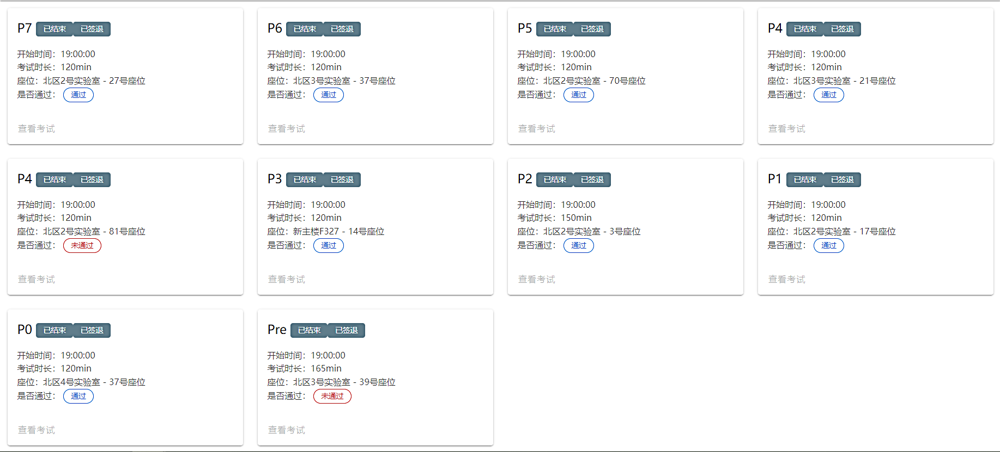
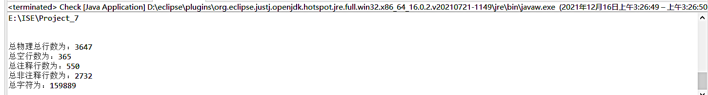

计组实验，P0 到 P7，这其中的过程小到可以用一张图来概括 ↑ ，但也大到可以说很多很多……
从 P0~P3 的 AK，到 P4 因为死磕一个阴间的可变移位指令直接 gg，再到 P5~P7 都是做两道题低空飘过…… 计组到后面的越来越吃力让我认识到了自己能力的边界或者说是上限，有些东西确实是自己能力之外的，便就不必强求；自己的天赋的高低是与生俱来的，而我唯一能做的，就是不断努力，做最好的自己。(ง •_•)ง
本人的上机虽肯定算不上一帆风顺，但也万幸没有太多的的艰辛，中间挂了一次最后还因为 P7 的 gap 而最后跟上了第一梯队，也算是对这个学期在这个 CPU 的 2000 多行代码上的浓缩的心血的最好的回报了吧。

更新ing…
以下是本人各次的上机的一些亲身经历（没有题解！没有题解！没有题解！），充其量是以第一人称口吻描述的一个小菜鸡的上机体验 & 总结 ~ ，各位客官要是想看详细做题思路或者快速AK方法的话可以移步其他 dalao 的博客哦 (*￣∇￣*)
Pre
课上：
Pre 是一次非常非常重要一次模拟考试，既可以让你自测前 3 个 P 的学习进度，也能让你实地体验一次计组课上考试的流程与氛围，更让你体会一下考试挂掉是一种咋样的心态www…
Pre 考试一共三道题，全部做对才算通关，分别是logisim 和 verilog 的两道有限状态机，以及一道C语言翻译汇编语言。这次考试我被卡在第二题直到结束（有很多人跟我一样），成功让我意识了一个我一直以来对有限状态机状态转移的误区，警醒让我以后画状态转移图的时候一定要倍加小心。
课上没达到通关条件的话是没有问答的，助教会在考试时间结束时统一签退，然后就可以（灰溜溜的）离开了…
P0
课上：
P0 的课上就是三道有限状态机的题目，只要课下能过了那几道题，课上的思路与课下完全相同，画好状态转移图即可。
考试问答助教先让我讲了一下有限状态机的思路，然后问了我logisim如何仿真/自动运行并控制其时钟变换频率，并且问我RAM和ROM如何导入数据（我当时不会…）
P1
课上：
P1 课上是三道 verilog 的有限状态机的问题，注意好两种状态机该用哪一种，仔细的分析好每一种情况，画好状态转移图之后再开始码代码会事半功倍。and 记得做好初始化和循环的时候参数的复位！
考试问答的话，助教会让你讲课上题目的实现过程，并且问你一些关于仿真和波形图的问题。
P2
课上：
P2 上机的话是汇编语言的编写（翻译）一共三道题，2 h 30 min，前面两题是给了你完整的 C 语言代码，直接翻译即可（我甚至翻译完都不知道题干是什么哈哈），第三题是一个双关键字的排序问题，它只给出了部分核心代码（冒泡排序的 C 语言代码(￣∠￣)ﾉ ）所以要自己用C语言先把题目实现出来然后再照着自己的 C 语言完整代码进行翻译。
考试问答助教会让你逐个解释Mars上方工具栏各个按钮的作用，并且让我讲了 0 - 31 号寄存器各自的作用（分类），并让我把 text 代码导出为 16 进制 txt 文件（导出按钮的应用）。
P3
课上：
P3 是第一次对 CPU 进行“加指令”操作，所以应提前熟悉指令集对指令的描述方式，课上为一条计算类指令，一条跳转类指令，一条存储类指令。因为是单周期，所以不用考虑前后指令的冲突，每条指令都有自己完整的数据通路，因此按照题目要求的功能直接加对应功能的模块并用控制信号控制即可，记得分析好新指令需要用到那些元件和数据通路是怎么样的。
考试问答的话问我课上加指令的思路，和具体一条指令的添加方法，以及如何验证课上加指令的正确性（编写测试程序）（课上会有专门的 Mars 让你进行新增指令的使用和测试），最后看了我的文档，并且问了几道思考题。
P4
课上：
单周期 CPU 的加指令其实就是 P3 加指令的代码化，在搭建 P4 的课下的过程中基本上我们对数据通路的实现已基本熟悉，这里建议在课下提交的 zip 文件中附上 P3 的 logisim 文件，课上的时候可以对照 logisim 先想好要加哪些通路和控制信号，在代码中实现即可。
这里建议在 Control Unit 中额外留出一个端口专门处理课上新增的信号，然后由这个端口控制顶层模块中的模块行为，此外注意课上的时候该跳题就跳题，不要执着于某一道题，因为某一道题的考点可能特别阴间；（我就是这么挂的嘤）由于是第一次 verilog 的 CPU 上机，有些 verilog 语法有可能还不是太熟悉（我挂 P4 的就是因为死磕第一题计算类的可变数的循环移位指令然后就寄了），所以遇到不确定的或者完全不会的题目要求或描述果断跳过！
考试问答主要是看我的课上编写的验证的测试程序 (mars) & 要求我讲述课上的加指令的思路 & 如果写了课下测评程序的话会让你去 5 号实验室答辩（讲解思路&实现细节问答）。
P5
课上：
总结一下流水线课上加指令流程( P5 & P6 )：
1.构建数据通路
2.加控制信号
3.加暂停、转发条件
所有加指令都离不开上面这三步，课上的时候只要条理清晰，按部就班的分析指令的操作，一步一步的把指令加入你的流水线中即可。
第一次的 P5 很难，绝大多数人挂了，课上还临时延长了半小时做题时间，据说是因为通过率太低，但多的这半个小时在大多数同学口中就是多坐了半小时的牢（◐ˍ◑），所以 P5 第一次的通过人数可以说低到令人发指（挂了一次 P4 的小菜鸡表示幸好本人没赶上这次堪称变态的考试）
第二次 P5 的指令相对而言就正常很多了，三条指令分别为一个计算指令、一个条件跳转并连接指令、一个条件写指令。
计算指令的控制信号与其他的计算指令完全相似，数据通路不变，控制信号只需要更改ALU_Control信号，并且在ALU中加入对应操作，然后在转发&暂停中把它并入cal_r/cal_i型指令即可。10min中之内可以解决。
条件跳转并连接指令也与其他跳转指令大抵相同，但这次的清空延迟槽操作十分有难度，清空延迟槽操作就是在不跳转的时候不执行下一条指令（延迟槽中的指令）而是执行下下条指令，那么这种情况就需要我们在不跳的时候在上升沿清空F级到D级的寄存器，相当于使延迟槽中指令变为nop，但要注意当该条跳转类指令被阻塞在D级的时候不能清空延迟槽，因为是否跳转的结果还没被计算出来，无法判断是否需要清空。所以在D级的reset信号或一个是该条跳转指令并且不阻塞不跳转的判断即可。
条件写指令与其他写指令的不同之处在于，它具体写哪个寄存器是根据从内存中取出来的数的某些特征判断而得的，也就是在M级才知道要写哪个寄存器，对于条件存储类指令，我们只有到M级才知道写入目标是什么，这对会我们的转发和暂停造成影响。我们需要对stall信号的生成逻辑进行修改，即：如果 D 级的指令要读寄存器，而且后面的新指令可能要写这个寄存器，那么就stall。此外我们还需要在M级根据DM取出的值修改A3（GRF写入地址），然后再传入下一级流水寄存器W_REG和Hazard_Unit即可。
考试问答的话，助教先让我讲了课上题目的加指令的方法&转发/暂停思路，然后极快速的浏览一遍你的文档，让我讲思考题其中一题你是怎么想的，如果写了自动测试程序，会先大致浏览一遍你的程序，然后问你数据是怎么构造的，要考虑哪几种情况balabala……然后会让你到5号实验室，那里会有专门的助教问你的测序程序的思路，但是，只要你把你的测试程序打包成一个可正确执行的exe（务必注意路径问题！），他就不会问你（也问不了） 并且算你通过嘿嘿嘿(º﹃º)
本人做的 P5 为第二次 P5，所以还算简单（相对而言），但是条件跳转的转发少考虑了一种情况导致耽误了很久…，最后只能做两题勉强通关…（分数 - -…）。
P6
课上：
P6课上与P5大体相似（毕竟框架没变），也是一个计算指令、一个条件跳转并连接指令、一个条件写指令。所加的方法也基本没变，再次就不再赘述了。
本人上机时第一题做的很顺利，但是第二题改了原本的输出控制信号忘记改写对外DM的写寄存器控制信号，导致我花费了很久时间debug…然后条件写就基本没啥时间看了…然后匆忙加完一直过不了，好气啊啊啊（最终还是没做出来条件写www，一直报WA，我也不知道为什么了……o(╥﹏╥)o ）
问答的话与P5大抵相同，也就不再重复了。
P7
课下：
P7 主要的实现就是 CP0 模块的搭建，每一种异常的判断，宏观 PC 的流动；剩余的就是数据通路的修修改改和顶层模块及输出的搭建即可。评测机的话我是用 python 写了一个，另外由于 MARS 修改为支持异常比较困难，并且不能支持溢出的控制，所以建议评测机写成两个 CPU 之间相互对拍的形式，如果出现错误相互对照修改，共同 debug 即可。
emmm… P7 的课下的话我们这一届的实验教程实在写的不尽如人意（差的实在一言难尽…），反正我看完之后完全没有头绪如何加这个叫“异常与中断”的玩意，因为他只是介绍了每一部分该有的作用和需要你是实现的功能，如何实现这些功能却只字未提，当然有些大佬可以纯自创出自己的方法来实现需求，但是这大多数人来讲仍然是难于登天，所以许多人的选择都是参考往届学长的博客甚至直接参考往届学长的代码，只要不直接 Ctrl C V，你把学长如何实现核心需求的代码弄明白，再根据自身的理解把一些零散的模块补全就能基本上实现需求，然后再针对具体的要求把代码补充完整，当然写出来就AK的可能性微乎其微，注意至少要留出一个整天去 debug & 完善你的代码。
课上：
P7 的课上不难，甚至可以说是所有 P 中最简单的，只要不要像我这样过了强测之后被冲昏了头连转发都忘记了，加指令基本 10min 内解决。
因此，很多人也戏称： P7 只有 5min 出来和 2h 出来两种情况 : ) ,因为要是强测没过，课上 debug 成功率很低很低，因为课上并没有具体测试指令代码，只有错误信号，而且还有可能不是你的 CPU 发生错误时的地方（你的错误可能往后几条指令才会在对外信号中显示）。但是只要强测过了，就可以基本宣告已经成功了。
课上唯一要加的是一条产生异常指令，其与其他可能产生异常的指令（如 add ）所需要的通路和判断条件都基本相同，同时根据要使用的寄存器记得加入转发/暂停条件（血的教训）即可，正常情况基本10min内搞定的。
考试问答也异常简单，就问了 ExcCode 如何流水 & Timer 的两种模式区别，连思考题都没看（我的 CPU 设计文档都没打开）；然后…… 助教：（握手）恭喜你完成所有实验，感谢你的参与~（完结撒花(*^▽^)/★*☆）
额外提醒一下，别心存侥幸，只要你课下的异常/中断有 bug ，就一定会被强测测出来（现场助教打包票的）（都怪那个叫CH的男人）。所以，课下好好和别人对拍，做到万无一失。
拙笔不才，如有语句不顺之处，敬请谅解。
by Tan